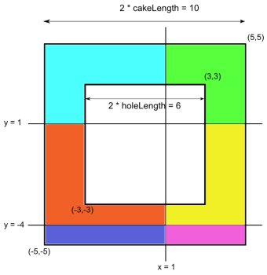

Single Round Match 411 Round 1 - Division I, Level Two
Little Bonnie has been given a special cake as a reward for her good performance in her Math class. When viewed from above, the cake is a square, with an empty square hole inside. Both squares are centered at (0, 0) and their sides are parallel to the x- and y-axes.
Bonnie is going to cut the cake using several horizontal and vertical cuts. These cuts are given in the int[]s horizontalCuts and verticalCuts. The i-th horizontal cut is a line parallel to the x-axis which goes through the point (0, horizontalCuts[i]). Likewise, the i-th vertical cut is a line parallel to the y-axis which goes through the point (verticalCuts[i], 0). All cuts have infinite lengths.
You are given an int cakeLength, half of the side length of the outer square, and an int holeLength, half of the side length of the inner square hole. Note that both of these numbers are halves of the sides of the corresponding squares. Return the number of pieces of cake that will exist after all the cuts are performed.
HoleCakeCutscutTheCakeint, int, int[], int[]intint cutTheCake(int cakeLength, int holeLength, int[] horizontalCuts, int[] verticalCuts)
3,
[1, -4],
[1]
The cake has the side length of 10, and the side of the hole is 6. Two horizontal and one vertical cuts divide the cake into 6 pieces. Those pieces are colored differently in the following picture:

5,
[],
[-2, 2]
There may be no horizontal cuts.
5,
[1],
[-5, 5]
5,
[40, -40],
[20, 0, -20]